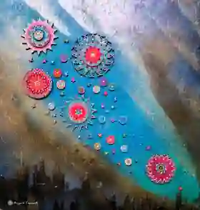

Пара и семья
Повторяющиеся конфликты, кризисы, перемены и вопросы семейной системы.
Медицинское образование · психотерапия · творчество
Внимание к человеку. Интерес к его внутреннему миру.
Медицинский опыт, психотерапевтическая практика и авторская мастерская — не отдельные биографии, а один путь внимательной работы с человеком, образом, цветом и материалом.


Личная ситуация, отношения, профессиональный запрос.
02Авторские работы и практика внимательного прохождения.
03Новые фотографии встроены в ритм страницы, а не сложены отдельным архивом.
Начать можно с ситуации, а не с названия метода
Формат работы определяется запросом. Подход можно обсудить с Андреем Сергеевичем до записи, не раскрывая в переписке лишних подробностей.
Повторяющиеся конфликты, кризисы, перемены и вопросы семейной системы.
Личная ситуация, переживания и отношения. Методы подбираются под конкретный запрос.
Супервизия, профессиональный разбор, преподавание и семинары.
Цвет, форма, рисунок и лабиринт как способ наблюдать ощущения и образы.

«Не найти короткий путь. А заметить, как идёшь».
Крупная работа здесь снимает ощущение «стены текста» и связывает профессиональный рассказ с визуальным языком мастерской.
От медицины к психотерапии
Ключевые этапы профессионального пути вынесены в хронологию, а международная сертификация — в отдельную карточку. Так раздел легче считывается с телефона.
Медицинское образование и работа врачом-травматологом.
Травматология, ортопедия и военно-полевая хирургия.
Психосинтез, затем системная семейная, мультимодальная и телесно-ориентированная психотерапия.
Всемирный сертификат психотерапевта № 010 WCPC gpRU.
Консультации, супервизия, семинары и авторские произведения.
Ручная работа · внимание · личное исследование
Андрей Сергеевич создаёт персональные расписные лабиринты из дерева. Здесь важны и сам предмет, и опыт взаимодействия с ним.
Самопознание здесь — метафора и творческий опыт, а не обещание диагностики или лечения.
Сентябрь 2026 · редакторский выбор из 19 новых фотографий
Четыре выразительных кадра показывают разные стороны мастерской. Остальные исходники сохраняются для дальнейшего расширения портфолио.
Названия в этой рабочей версии описательные. Перед переносом на основной домен их можно заменить на авторские названия, если Андрей Сергеевич их уточнит.
Две линии одной биографии
Андрей Сергеевич Горшков родился 12 октября 1959 года в посёлке Мга Ленинградской области — в семье врача и машиниста поезда.
Медицинские книги матери и мастерская отца задали две линии, которые позже соединились: профессиональная помощь человеку и авторская работа с материалом.
Сегодня это консультации, супервизия, семинары и мастерская, где рядом существуют лабиринты, мандалы и предметные композиции.
Начать разговор
Напишите Андрею Сергеевичу или позвоните. Формат, время, продолжительность и стоимость обсуждаются до записи.
Авторские творческие практики и предметы мастерской не заменяют медицинскую диагностику и лечение, когда они необходимы. Формат работы обсуждается индивидуально.